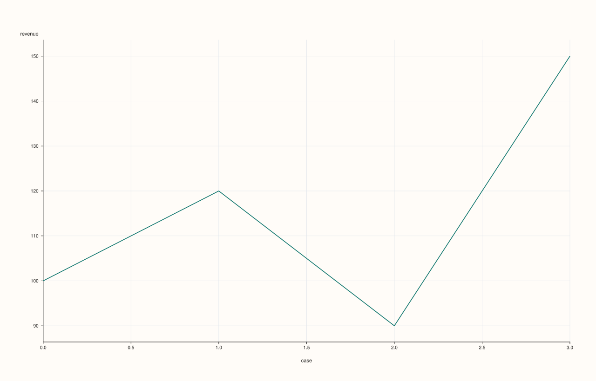
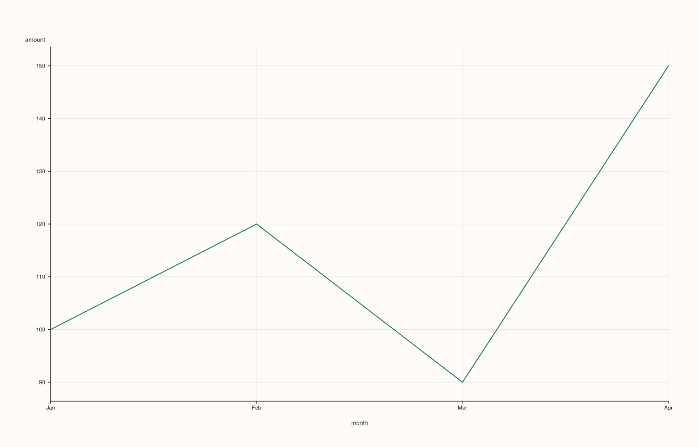
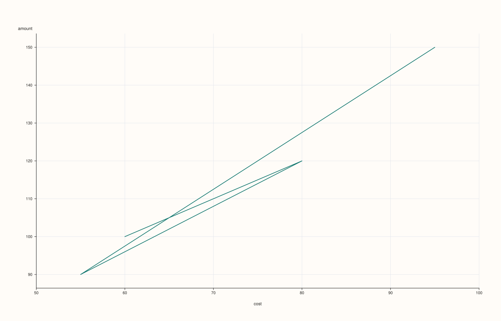
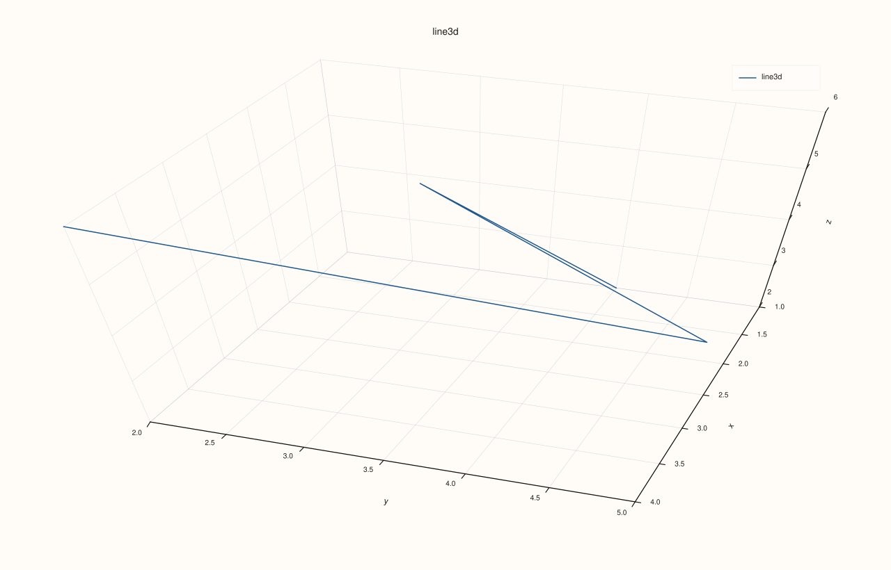
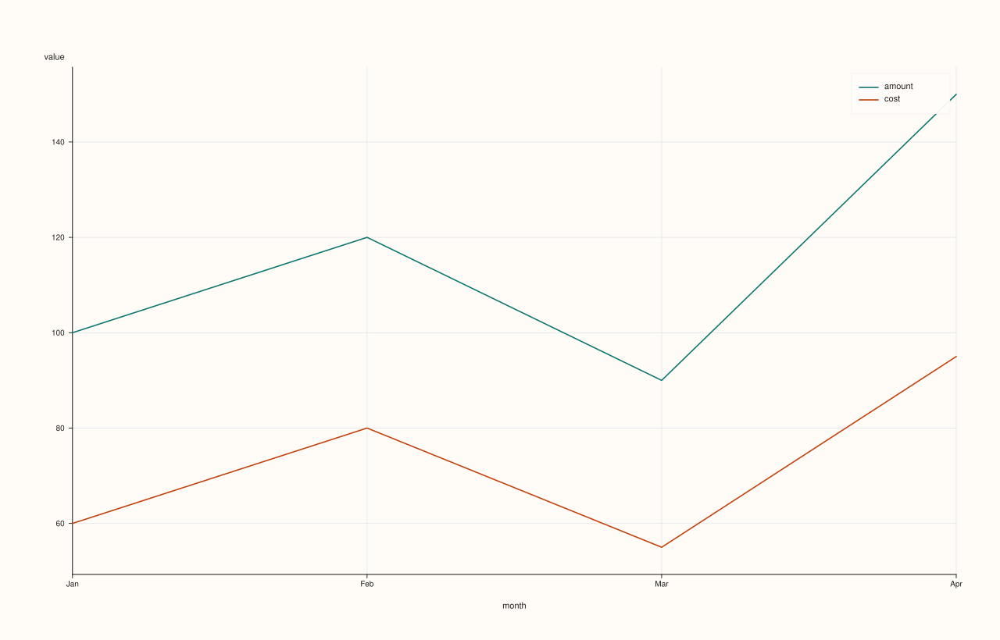

DataFramePlotAccessor::line¶
Back to DataFramePlotAccessor API Reference
Signatures¶
DataFramePlotAccessor::line(std::string_view y_feature,
std::optional<std::string_view> x_feature = std::nullopt) const -> pluss::pl::Studio
DataFramePlotAccessor::line(std::string_view y_feature,
std::optional<std::string_view> x_feature,
const LinePlotOptions& options) const -> pluss::pl::Studio
DataFramePlotAccessor::line(pluss::msharp::RangeView::Of<std::string_view> y_features,
std::optional<std::string_view> x_feature = std::nullopt) const -> pluss::pl::Studio
DataFramePlotAccessor::line(pluss::msharp::RangeView::Of<std::string_view> y_features,
std::optional<std::string_view> x_feature,
const LinePlotOptions& options) const -> pluss::pl::Studio
DataFramePlotAccessor::line(std::initializer_list<std::string_view> y_features,
std::optional<std::string_view> x_feature = std::nullopt) const -> pluss::pl::Studio
DataFramePlotAccessor::line(std::initializer_list<std::string_view> y_features,
std::optional<std::string_view> x_feature,
const LinePlotOptions& options) const -> pluss::pl::Studio
What It Does¶
Draws one line trace per requested y-feature over a shared x-axis, returning a
pluss::pl::Studio figure. This page also explains mechanics shared by every method on
this accessor — step(), area(), scatter(), bar(), and the rest all follow the same
“nothing is drawn until you export it” and x-axis-resolution rules described here, so their
own pages link back to this one instead of repeating it.
Important
Every plot method returns a Studio, not a DataFrame — and nothing prints
line() (like every method on this accessor) builds and returns a pluss::pl::Studio — a
figure object from the separate PlussPl plotting library. It does not print a table,
and Studio has no operator<<, so std::cout << chart will not compile. To actually see
or persist the result, call one of Studio’s own methods afterward:
chart.show()— opens the figure in a native window or the OS default browser/viewer.chart.save_svg("out.svg"),chart.save_pdf("out.pdf"),chart.save_png("out.png", dpi)— write the figure to a file (save_pngshells out to an external SVG-to-raster converter such asrsvg-convert,inkscape, or ImageMagick, and throws if none is found).chart.to_svg()/chart.to_pdf()— return the rendered markup as astd::string, for embedding elsewhere instead of writing a file.
Every example on this page ends with one of these calls to make that visible; none of them
show a rendered “Output” block the way DataFrame/Thread method pages do, because there
is no text form of a chart to display.
Choosing the x-axis: three ways to end up with an x-feature¶
Every 2D chart method that takes an x_feature argument resolves it the same way:
Pass it explicitly —
plot.line("sales", "month")always wins, regardless of any accessor-level default.Set a shared default on the accessor —
df.plot(options)whereoptions.default_x_feature = "month"lets every subsequent chart method omitx_featureand still use"month". An explicitx_featureargument on a given call still takes precedence over this default.Omit it entirely, with no default set — the x-axis becomes the frame’s own row labels (
DataFrame::label()), not a bare0..n-1index, and the axis title becomes the literal string"case". If the row labels are text, a timestamp, or a time index, the axis renders as evenly spaced categorical positions with those values as tick labels; if the row labels are themselves numeric, they’re used as real numeric x coordinates.
See Examples 1, 2, and 3 below for each of these three paths in turn.
Parameters¶
y_feature (std::string_view)
A single numeric feature to draw as one line trace.
y_features (RangeView<std::string_view> or std::initializer_list<std::string_view>)
Several numeric features, each drawn as its own line trace on the same axes. A legend
is shown automatically whenever more than one y-feature is requested (and suppressed
for a single feature). At least one y-feature is required — an empty list throws
"DataFrame::plot().line: at least one y feature is required".
x_feature (std::optional<std::string_view>, default std::nullopt)
The feature to use as the shared x-axis. See “Choosing the x-axis” above.
options (LinePlotOptions)
cpp struct LinePlotOptions { double alpha{1.0}; double line_width{1.6}; std::optional<pluss::pl::LimitMethod> y_limit_method{pluss::pl::LimitMethod::Padded}; XYAlignOptions align{}; };
alpha controls trace opacity, line_width the stroke width. y_limit_method chooses
how the y-axis auto-fits to the data: Padded (the default) adds a small margin beyond
the data’s min/max, Tight fits exactly to the data range with no margin, and
TickAligned snaps the limits outward to the nearest tick boundaries.
```{note} align is present on the struct but has no effect at this layer
`align` (`XYAlignOptions`) exists so `Catalog::plot().line()` can reuse this exact
struct type for its own key-to-key alignment — see
[`CatalogPlotAccessor::line`](../catalog-plot/line.md)
for where it actually does something. `DataFramePlotAccessor::line()` itself never reads
`align`: every column in an already-constructed `DataFrame` shares one row count by
construction, so there is no length mismatch here for `align` to resolve in the first
place. Setting it to any `XYAlignMode`/`XYAlignBy` combination produces byte-identical
output.
```
Returns¶
pluss::pl::Studio
A figure with one pane containing one line trace per requested y-feature.
Examples¶
Example 1. Explicit x-feature: the most common and clearest form.
using namespace pluss::table;
auto sales = DataFrame({
{"month", Thread(pluss::make_note({"Jan", "Feb", "Mar", "Apr"}))},
{"amount", Thread(pluss::make_series({100.0, 120.0, 90.0, 150.0}))},
{"cost", Thread(pluss::make_series({60.0, 80.0, 55.0, 95.0}))},
});
auto chart = sales.plot().line("amount", "month");
chart.show();
sales.plot() enters the accessor with no shared options; .line("amount", "month") draws
amount on the y-axis against the text feature month on the x-axis (rendered as four
evenly spaced categorical positions labeled "Jan".."Apr"), producing a single unlabeled
(no-legend, since there’s only one y-feature) line trace. chart.show() is what actually
opens the figure — nothing above it renders anything on its own.

Example 2. A shared default_x_feature set once on the accessor, used implicitly by
multiple chart calls.
DataFramePlotOptions options;
options.default_x_feature = "month";
auto plot = sales.plot(options);
auto chart1 = plot.line("amount"); // x defaults to "month"
auto chart2 = plot.line("cost"); // also defaults to "month"
auto chart3 = plot.line("amount", "cost"); // explicit x_feature="cost" overrides the default
chart1 and chart2 both use "month" as their x-axis without repeating it. chart3
demonstrates that an explicit x_feature argument (here, "cost") always wins over
options.default_x_feature, even when both are present in the same call.
chart1 (amount vs. month):

chart2 (cost vs. month):

chart3 (amount vs. explicit cost, overriding the default):

Example 3. No x-feature at all — falls back to the frame’s own row labels.
auto untitled = DataFrame({
{"amount", Thread(pluss::make_series({100.0, 120.0, 90.0, 150.0}))},
}, Thread(pluss::make_note({"Q1", "Q2", "Q3", "Q4"})));
auto chart = untitled.plot().line("amount");
chart.show();
untitled was built with explicit row labels ("Q1".."Q4") and no month-style feature
at all. line("amount") with no x_feature and no default_x_feature set falls back to
those row labels: the x-axis renders "Q1".."Q4" as categorical positions, and the axis
title becomes "case" (not "amount" and not the row-label feature’s own name — literally
the string "case").

Example 4. Multiple y-features overlaid on one pane, drawn from a brace-init list.
auto chart = sales.plot().line({"amount", "cost"}, "month");
chart.show();
Two line traces share the same month x-axis and the same pane; a legend appears
automatically (labeled "amount" and "cost") because more than one y-feature was
requested. chart.show() opens the figure directly instead of writing a file — useful
during interactive exploration.

Example 5. The same multi-feature call using a reusable RangeView instead of a brace-init
list — useful when the feature list is built at runtime rather than known at the call site.
std::vector<std::string_view> y_names{"amount", "cost"};
auto chart = sales.plot().line(pluss::msharp::RangeView::Of<std::string_view>(y_names), "month");
chart.save_pdf("monthly_lines.pdf");
Behaves identically to Example 4 — the RangeView overload and the initializer_list
overload are the same underlying call, just accepting the y-feature list in different forms.

Example 6. An explicit LinePlotOptions, tuning opacity, stroke width, and y-axis fit.
LinePlotOptions line_options;
line_options.alpha = 0.85;
line_options.line_width = 2.5;
line_options.y_limit_method = pluss::pl::LimitMethod::Tight;
auto chart = sales.plot().line("amount", "month", line_options);
chart.show();
The line is drawn slightly translucent (alpha = 0.85), thicker (line_width = 2.5), and
the y-axis is fit tightly to the data’s actual min/max instead of the default padded
margin.

Example 7. Multiple y-features with an explicit options object — the three-argument overload works the same way for the list-based forms as it does for the single-feature form.
auto chart = sales.plot().line({"amount", "cost"}, "month", line_options);

Notes¶
Returns a
pluss::pl::Studio, never aDataFrameand never printed text — see the important callout above for how to actually view or save the result.At least one y-feature is required; an empty
y_featureslist throws.A legend is shown automatically once more than one y-feature is requested.
The x-axis resolves in three steps — explicit argument, then
options.default_x_feature, then the frame’s own row labels titled"case"— see “Choosing the x-axis” above.y_limit_methodonly affects how the y-axis auto-fits; it does not change the data drawn.
See Also¶
DataFramePlotAccessor::step: the same shape, drawn as a step function instead of straight line segments.DataFramePlotAccessor::area/area_stacked: filled variants of the same y-features-over-shared-x-axis idea.DataFramePlotAccessor::scatter: points instead of connected lines, with an optional hue/color feature.DataFrame::plot: how to enter this accessor in the first place.